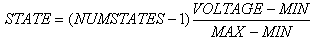

The RTVPROBE model is used to set the state of an indicator from a circuit voltage. It outputs a state value determined by the following formula:

where MIN and MAX are properties of the RTVPROBE object, and NUMSTATES is determined by the parent indicator. If the input voltage is less then MIN, then the output state is 0, and if the input voltage is greater than MAX
it is limited to NUMSTATES-1.
Fractional values are rounded to the nearest integer.
The model supports the following properties:
| Name | Description | Default | Notes |
MIN |
Value of input voltage for state 0 |
0 |
|
MAX |
Value of input voltage for FSD |
1 |
|
LOAD |
Value of optional load resistor |
- |
|
ELEMENT |
Target element within bitwise parent indicator. |
- |
bitwise parent indicator. - This property is used when the RTIPROBE is part of schematic model controlling a BITWISE indicator. |